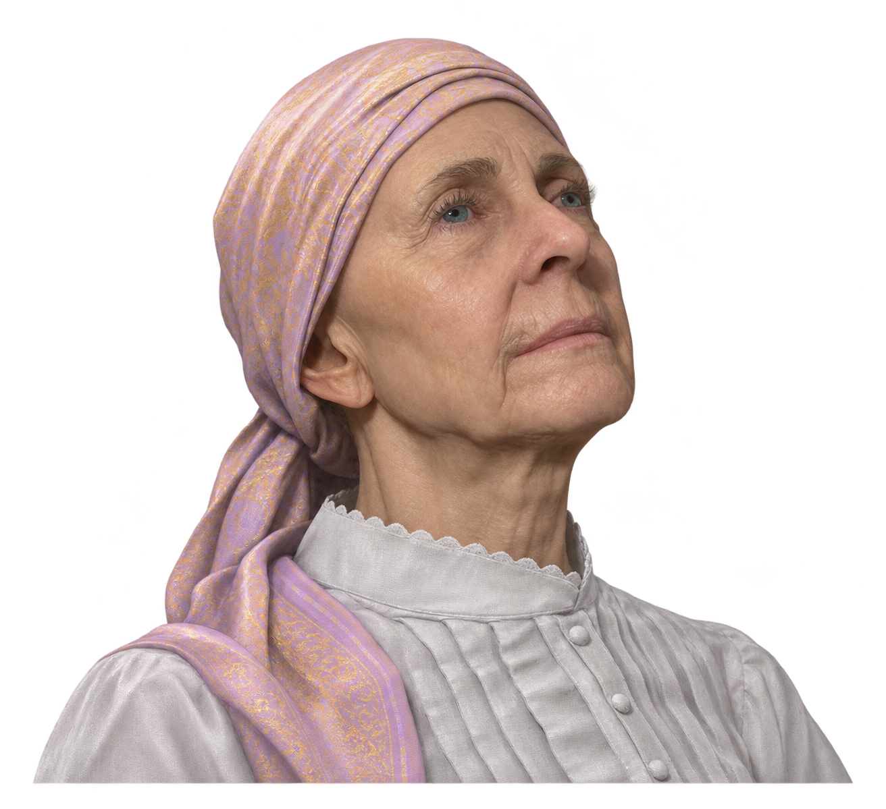

Médecine · Recherche
Deadman
Derrière les constantes et les dossiers, il reste toujours quelqu’un à comprendre. Une présence attentive au milieu des signaux de Bridges.
Au-delà des duels, des visages accompagnent chaque traversée. Retrouvez ici les figures de Bridges et les traces qu’elles laissent sur la route.
Derrière les constantes et les dossiers, il reste toujours quelqu’un à comprendre. Une présence attentive au milieu des signaux de Bridges.

Une silhouette rouge au bord d’une mer sans fin. Au-delà des relais et des montagnes, la Grève conserve son appel.

Les fondations d’un pays à réunir, et les liens qu’il reste à retisser. Son dossier appartient aux premières pages de cette traversée.

Au pied des sommets, un autre lien attend d’être renoué. Le réseau chiral prend forme entre les mains de celle qui veille sur Mountain Knot.